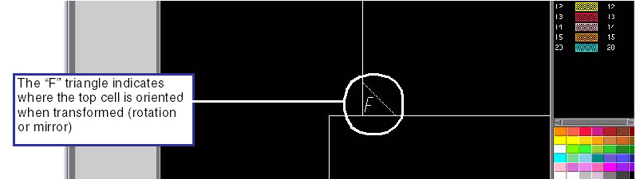

At the top level
of the job deck view depth, you can show the relative orientation
of all cells to the viewer window (indicated by an triangle with
an “F”). This allows you to see how the top cell is oriented after
transformation (such as with a rotation or mirror) when interactive
commands are given, without having to re-render the entire cell.
Procedure
- To enable orientation markers:
- In Calibre MDPview, select Options > Layout View. The
Preferences dialog appears.
- In the Preferences dialog,
click the View tab (if
it is not currently displayed).
- In the View tab, click Draw orientation markers of references.
Results
The top cell level (level 0) is redrawn
with the “F” triangles.
Figure 1. Cell Orientation Markers